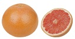
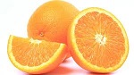
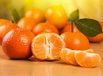
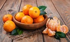
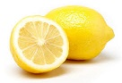

the best food at this time
links
coronavirus in Egypt
corona cases
How to avoid infection
the best food at this time
the advisible medicine for you
Vitamin C is thought to increase the production of white blood cells, which are key to fighting infections. Almost all citrus fruits are high in vitamin C. With such a variety to choose from, it’s easy to add a squeeze of this vitamin to any meal.
Popular citrus fruits include:
grapefruit

oranges

clementines

tangerines

lemons

limes